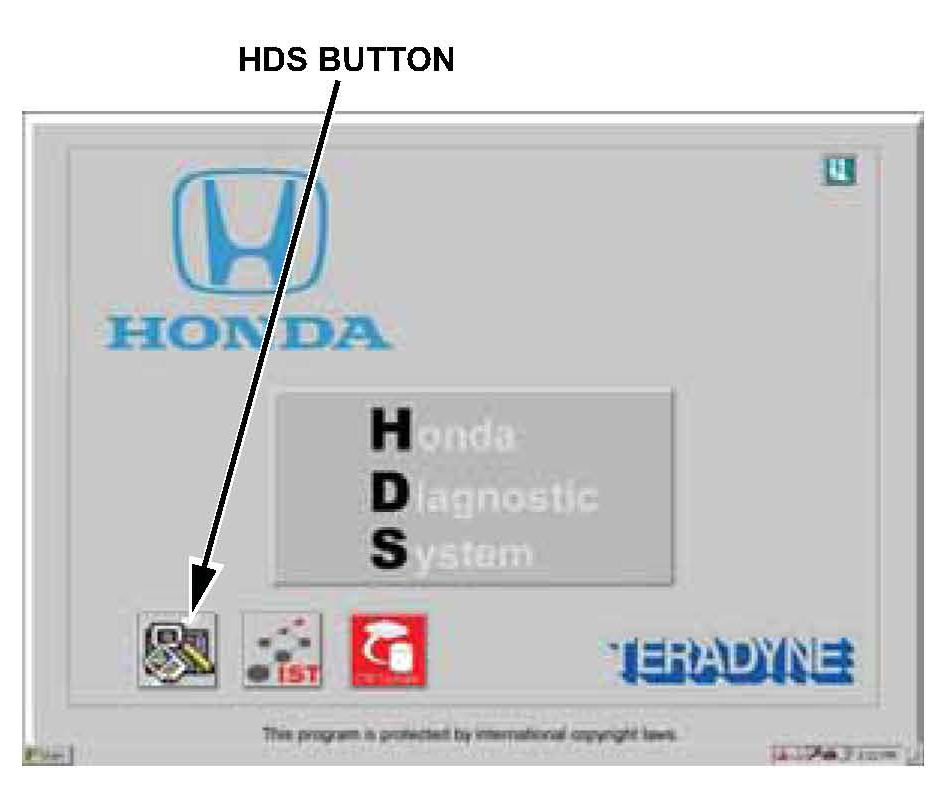
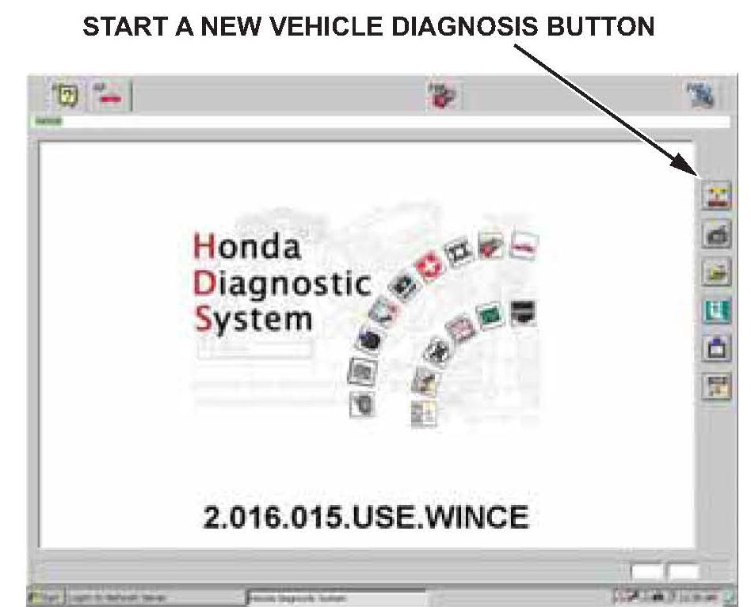
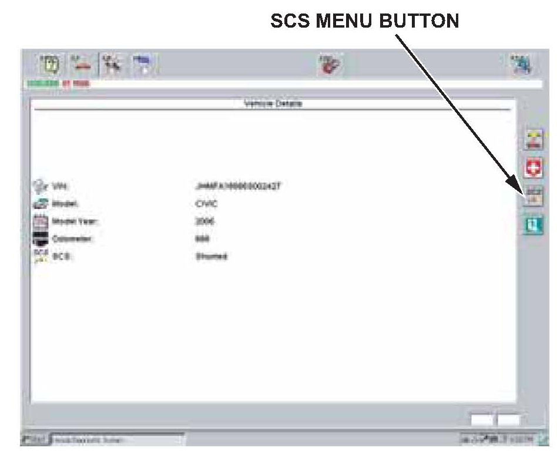
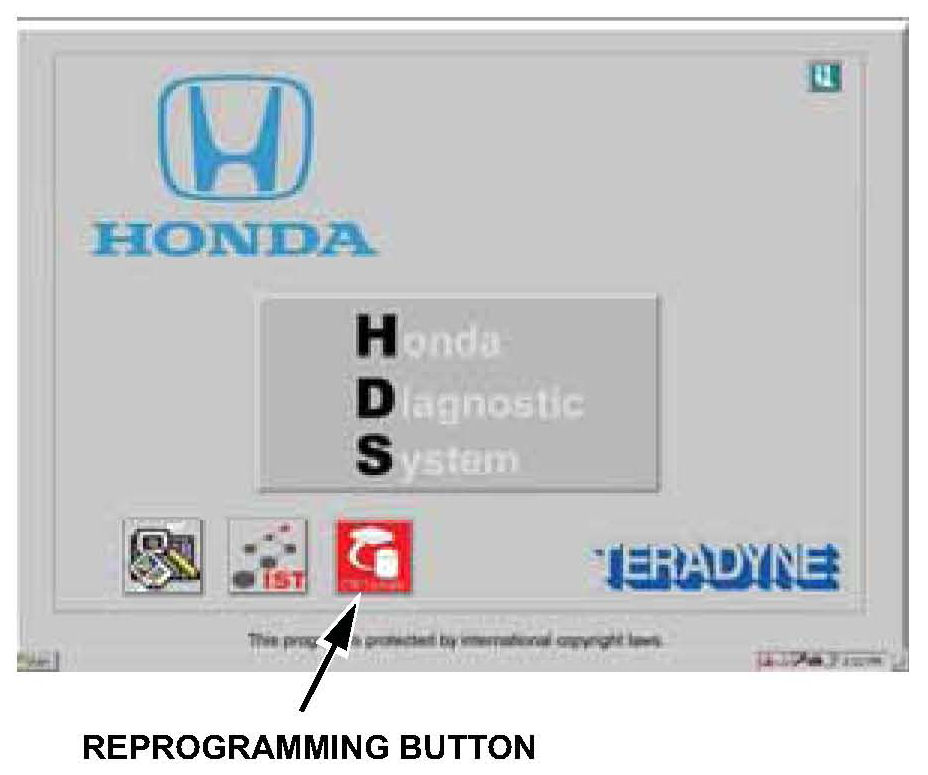
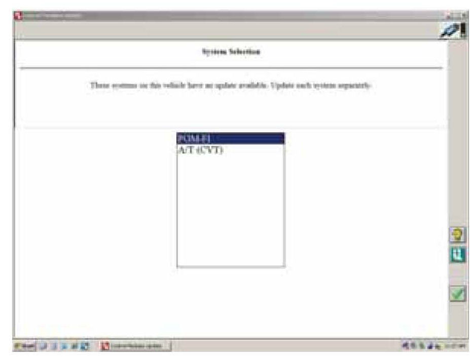

Replacing the PCM
If you replace the PCM, you must use the HDS to instruct the new PCM and the immobilizer keyless control unit to recognize each other's unique serial code or the engine cannot start.Preparation
To replace the PCM, you need these items:
^ Replacement PCM
^ One programmed ignition key for the vehicle
^ PCM code
NOTE:
If you cannot log in to the iN screen on the HDS, you must retrieve the PCM Code from the Immobilizer Code Inquiry in the iN.
^ HDS with the latest software
NOTE:
Make sure the market, the date, and the time on the HDS setup screen are correct. Select the F12 key in the upper right corner to get the Set-up Details screen. Make sure Market: is set to USA. Select the time display in the lower right corner to get the Date/Time Properties pop-up window. Make sure the date and time are correct. For details, refer to the Honda Diagnostic System (HDS) Setup Instructions listed under Tool Information in ISIS.
Procedure
1. Make sure you have the anti-theft code for the audio and navigation system (if equipped), then write down the XM Radio presets (if equipped).
2. Connect the HDS to the DLC (data link connector).
3. Insert a programmed ignition key into the ignition switch, and turn the ignition switch to ON (II). Turn on the HDS, then log in to the iN screen.

4. When the HDS comes on, select the HDS button.

5. Select the Start a New Vehicle Diagnosis button.
NOTE:
If the HDS does not communicate with the vehicle, refer to DLC Circuit Troubleshooting in the appropriate service manual. If the troubleshooting indicates a faulty PCM, go to step 16.
6. At the screen prompts, enter the VIN and the odometer reading, then verify the correct date and time.
7. From the System Selection Menu screen, select PGM-FI.
8. From the Mode Menu screen, select Inspection.
9. Select ETCS (TAC) Test, and do the TP Position Check.
NOTE:
If the throttle body needs cleaning, do it before replacing the PCM. Refer to Throttle Body Cleaning in the appropriate service manual.
10. On the HDS, exit to the Mode Menu screen, then select REPLACE PCM.
11. Follow the prompts to READ DATA. This saves the engine oil life percentage from the original PCM into the HDS so you can later download it into the new PCM.
NOTE:
If you cannot do this step, make sure you replace the engine oil and filter, and clean the throttle body after replacing the PCM.
12. Exit to the System Selection Screen, then select AT.
13. Select REPLACE PCM.
14. Follow the prompts to READ DATA. This saves the transmission fluid life percentage from the original PCM into the HDS so you can later download it into the new PCM.
NOTE:
If you cannot do this step, make sure to replace the ATF after replacing the PCM.

15. Exit to the Vehicle Details screen, then click on the SCS Menu button to short the SCS line. Keep the SCS line shorted for now.
16. Turn the ignition switch to LOCK (0).
17. Disconnect the battery cables.
18. Replace the PCM.
^ Refer to the Fuel and Emissions section of the appropriate service manual, or
^ Online, enter keyword PCM, and select PCM Replacement from the list.
19. Connect the positive battery cable and then the negative cable.
20. On the HDS, click on the SCS Menu button to remove the short in the SCS line. (The short may already be removed).
21. Turn the ignition switch to ON (II).
NOTE:
DTC P0630 will be set; you will clear it in step 34.

22. Select the Start a New Vehicle Diagnosis button.
The HDS may ask, Are you sure you want to change vehicle? If it does, click on the green check mark. This allows you to enter the VIN and odometer reading into the new PCM.
23. Manually enter the VIN and the odometer reading into the HDS. The HDS will ask you to confirm the VIN. When you click on the green check mark to confirm the VIN, the HDS writes it into the new PCM.
24. Select PGM-FI.
25. Select REPLACE PCM.
26. Follow the prompts to WRITE DATA. This writes the engine oil life percentage from the HDS into the new PCM.
NOTE:
If you cannot do this step, make sure you replace the engine oil and filter, and clean the throttle body after replacing the PCM.
27. Exit to the System Selection Screen, then select AT.
28. Select REPLACE PCM.
29. Follow the prompts to WRITE DATA. This writes the transmission fluid life from the HDS into the new PCM.
NOTE:
If you cannot do this step, make sure to replace the ATF after replacing the PCM.
30. Exit to the System Selection Screen, then select IMMOBI.
31. Select REPLACE PCM.
32. Follow the on-screen prompts. If your HDS is not logged in to the iN, you will have to enter the PCM Code you have retrieved from the iN Immobilizer Code Inquiry to proceed.
33. Exit to the System Selection Screen, then select PGM-FI.
34. Select PCM Reset. This clears the DTC set in step 21.

35. Exit to the HDS main screen, then select the reprogramming button.
36. Make sure the battery is fully charged.

37. Make sure you have the latest software in the HDS, then update the following systems (see Service Bulletin 01-026, Updating the ECM/PCM).
^ PGM-FI
^ A/T
38. Do the idle learn procedure:
^ Make sure all electrical items (A/C, audio unit, defogger, lights, etc.) are off, and then start the engine.
^ Let the engine reach its normal operating temperature (the cooling fans cycle twice).
^ Let the engine idle (throttle fully closed and all electrical items off) for 10 minutes.
39. Enter the anti-theft code for the audio and navigation system (if equipped), then enter the XM Radio presets (if equipped).
40. On vehicles without a navigation system, set the clock.